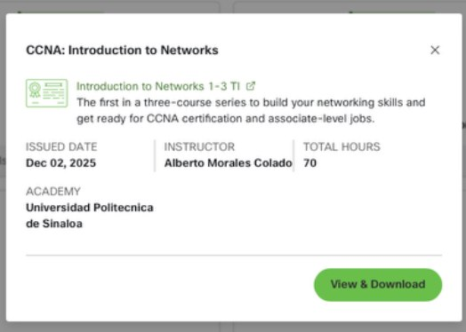
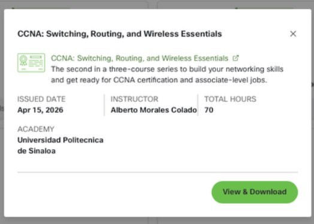
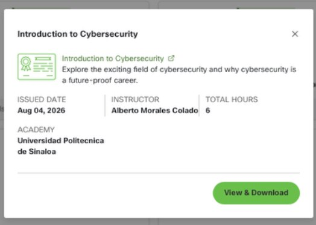
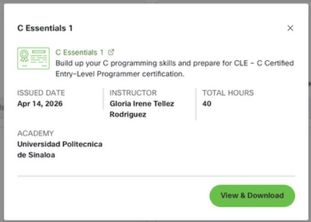
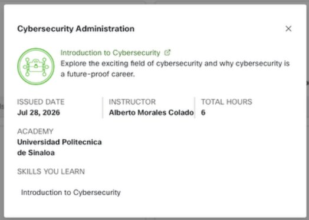
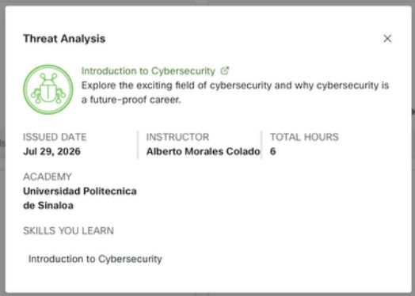
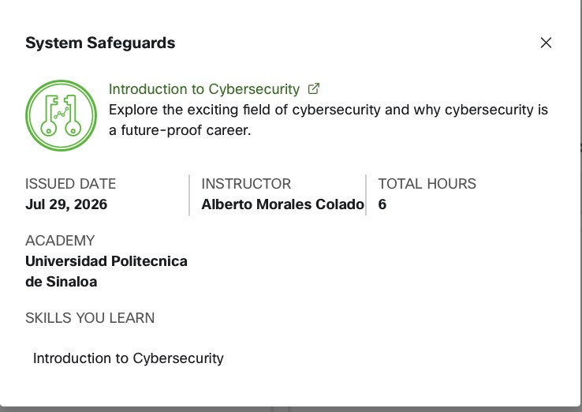
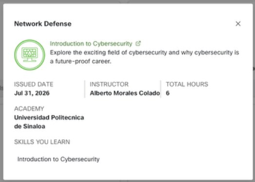
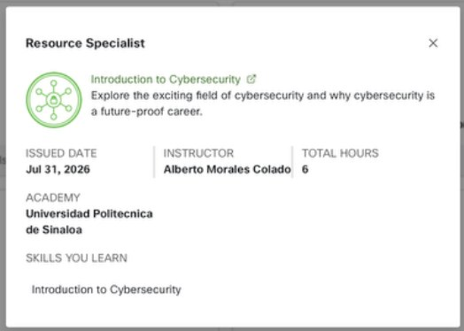

F◉CURION
01 — WEB
Focurion
Plataforma académica para estudiantes que reúne organización de tareas, metas, sesiones de enfoque y espacios colaborativos.
HTMLCSSJavaScriptBase de datos
Ver detalles del proyecto ↗PORTAFOLIO DE DESARROLLO
Estudiante de Ingeniería en Tecnologías de la Información e Innovación Digital. Me interesa desarrollar soluciones útiles a través de la programación y el diseño web.
01 / PERFIL
Soy estudiante de la Universidad Politécnica de Sinaloa (UPSIN). He trabajado en proyectos académicos de desarrollo web, programación y aplicaciones móviles. Busco seguir aprendiendo y fortalecer mis habilidades técnicas.
02 / TRABAJOS
01 — WEB
Plataforma académica para estudiantes que reúne organización de tareas, metas, sesiones de enfoque y espacios colaborativos.
02 — ANDROID
Aplicación Android desarrollada con Kotlin y XML: calculadora, IMC, cuenta bancaria, cotizaciones y conversiones.
03 / FORMACIÓN
Cursos y logros obtenidos en Cisco Networking Academy, organizados por área de conocimiento.
Selecciona una imagen para ver la captura de la constancia en NetAcad.

Cisco Networking Academy
Emisión: 02 dic 2025
Cisco Networking Academy
Emisión: 15 abr 2026
Cisco Networking Academy
Emisión: 04 ago 2026
Cisco Networking Academy
Emisión: 14 abr 2026
Cisco Networking Academy
Emisión: 28 jul 2026
Cisco Networking Academy
Emisión: 29 jul 2026
Cisco Networking Academy
Emisión: 29 jul 2026
Cisco Networking Academy
Emisión: 31 jul 2026
Cisco Networking Academy
Emisión: 31 jul 202604 / CONTACTO
¿Te interesa conocer más sobre mis proyectos? Puedes encontrarme en estas plataformas.
GitHub, LinkedIn y correo de contacto.
01 — WEB
Focurion es una plataforma académica desarrollada como proyecto colaborativo. Ayuda a estudiantes a organizar sus actividades, estudiar con mayor concentración y trabajar con sus compañeros.
02 — ANDROID
Aplicación académica desarrollada en Android Studio mediante Kotlin y XML. Integra distintas herramientas desde un menú principal.
DEVELOPMENT PORTFOLIO
Information Technology and Digital Innovation Engineering student. I enjoy creating useful solutions through programming and web design.
01 / PROFILE
I study at Universidad Politécnica de Sinaloa (UPSIN). I have worked on academic projects involving web development, programming and mobile applications. I aim to keep learning and improving my technical skills.
02 / WORK
01 — WEB
Academic platform for students with task organization, goals, focus sessions and collaborative spaces.
02 — ANDROID
Android app built with Kotlin and XML: calculator, BMI, banking tools, quotations and conversions.
03 / EDUCATION
Courses and achievements earned through Cisco Networking Academy, grouped by field.
Select an image to view the evidence screenshot from NetAcad.
Cisco Networking Academy
Issued: 02 dic 2025Cisco Networking Academy
Issued: 15 abr 2026Cisco Networking Academy
Issued: 04 ago 2026Cisco Networking Academy
Issued: 28 jul 2026Cisco Networking Academy
Issued: 29 jul 2026Cisco Networking Academy
Issued: 29 jul 2026Cisco Networking Academy
Issued: 31 jul 2026Cisco Networking Academy
Issued: 31 jul 202604 / CONTACT
Want to know more about my projects? Find me on these platforms.
GitHub, LinkedIn and email contact.
01 — WEB
Focurion is an academic platform built as a collaborative project. It helps students organize work, stay focused and collaborate with classmates.
02 — ANDROID
An academic Android application built using Kotlin and XML in Android Studio, with multiple tools accessible from a main menu.
PORTFÓLIO DE DESENVOLVIMENTO
Estudante de Engenharia em Tecnologia da Informação e Inovação Digital. Gosto de criar soluções úteis com programação e design web.
01 / PERFIL
Estudo na Universidad Politécnica de Sinaloa (UPSIN). Trabalhei em projetos acadêmicos de desenvolvimento web, programação e aplicativos móveis. Quero continuar aprendendo e aprimorando minhas habilidades técnicas.
02 / TRABALHOS
01 — WEB
Plataforma acadêmica com organização de tarefas, metas, sessões de foco e espaços colaborativos.
02 — ANDROID
Aplicativo Android feito com Kotlin e XML: calculadora, IMC, conta bancária, cotações e conversões.
03 / FORMAÇÃO
Cursos e conquistas da Cisco Networking Academy, organizados por área.
Selecione uma imagem para ver a captura da comprovação no NetAcad.
Cisco Networking Academy
Emissão: 02 dic 2025Cisco Networking Academy
Emissão: 15 abr 2026Cisco Networking Academy
Emissão: 04 ago 2026Cisco Networking Academy
Emissão: 28 jul 2026Cisco Networking Academy
Emissão: 29 jul 2026Cisco Networking Academy
Emissão: 29 jul 2026Cisco Networking Academy
Emissão: 31 jul 2026Cisco Networking Academy
Emissão: 31 jul 202604 / CONTATO
Quer saber mais sobre meus projetos? Encontre-me nestas plataformas.
GitHub, LinkedIn e e-mail de contato.
01 — WEB
Focurion é uma plataforma acadêmica desenvolvida em equipe. Ajuda estudantes a organizar tarefas, manter o foco e colaborar com colegas.
02 — ANDROID
Aplicativo acadêmico Android criado com Kotlin e XML no Android Studio, com várias ferramentas reunidas em um menu principal.